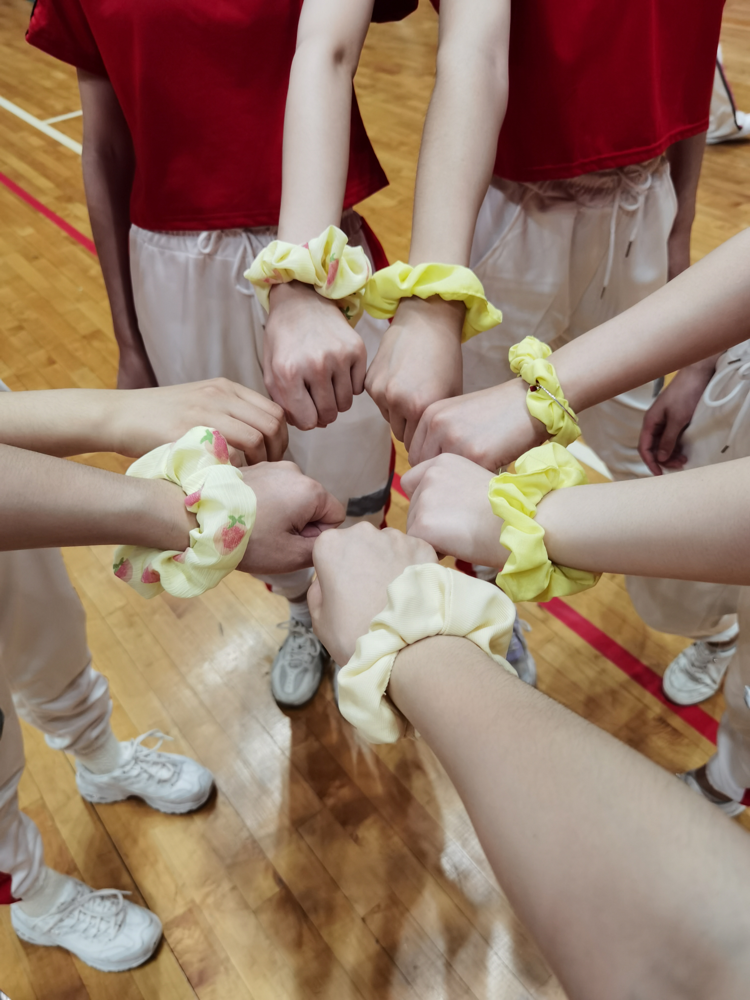
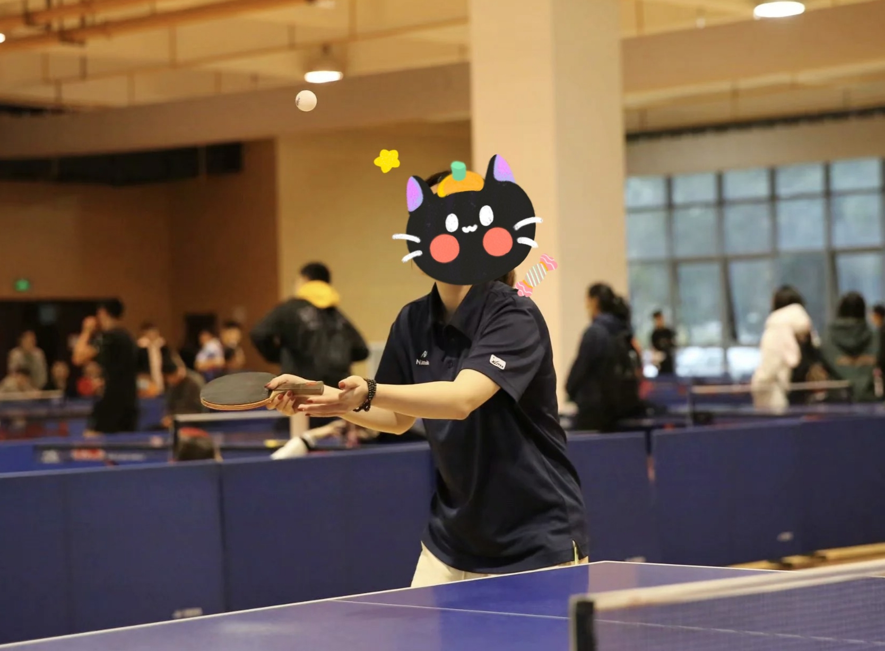
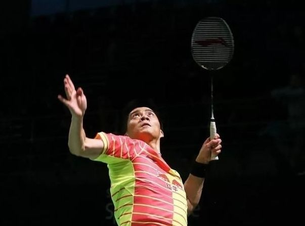

Sports can make people have a healthy body !
·Aerobics can not be said to be good at, just some interest in a sports activity, contact aerobics is an elective sports special course, also participated in the school sports opening ceremony performance and the second aerobics dance competition.

糖果超甜队
·健美操是一项深受广大群众喜爱的、广泛普及，集体操、舞蹈、音乐、健身、娱乐于一体的体育项目。 健美操中大量吸收了迪斯科舞、爵士舞、霹雳舞中的上下肢、躯干、头颈和足踩动作，特别是髋部动作， 这给健美操增添了活力。
听说你想了解健美操？点击右图有惊喜哦~

帅气师姐是我偶像！
·乒乓球(table tennis)，被称为中国的"国球"，是一种世界流行的球类体育项目，包括进攻、对抗和防守，男女老少皆适宜进行此活动。
·我和乒乓球结缘较早，但是没有接受过系统的学习和训练，只是兴趣所致经常玩一玩。小学时曾代表学校参加市运会，高中后期接触较少，现在是院乒乓球队的一员。很崇拜“大魔王”张怡宁。

杀球